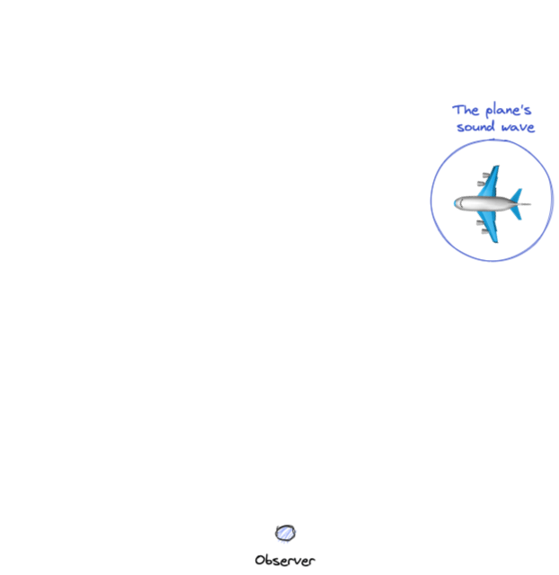
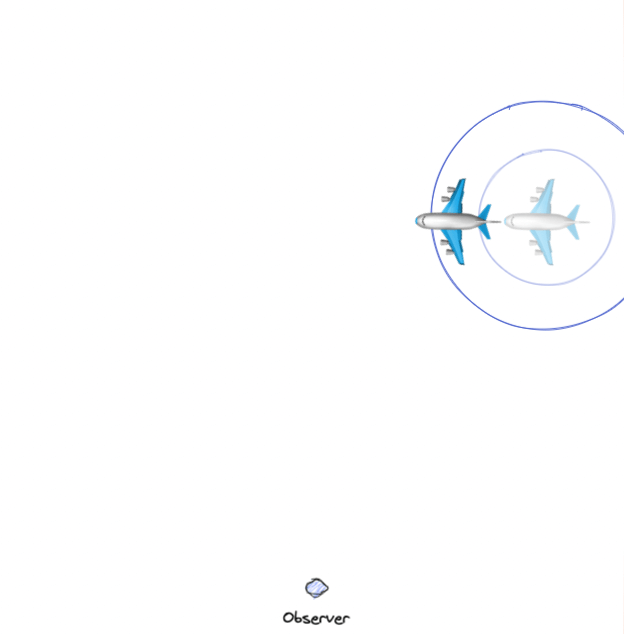
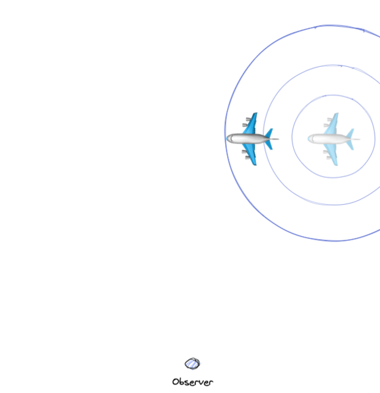
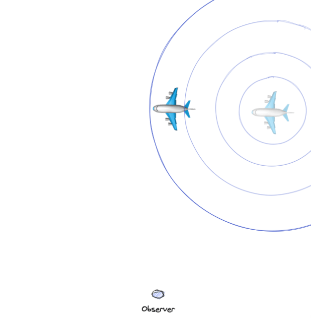
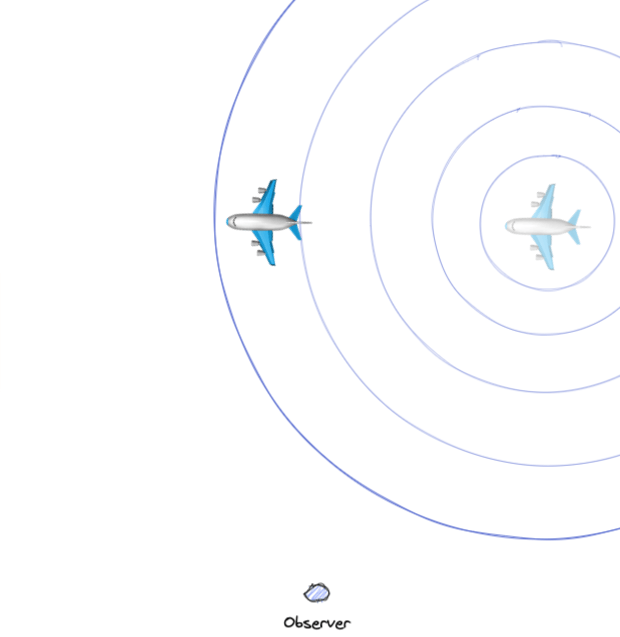
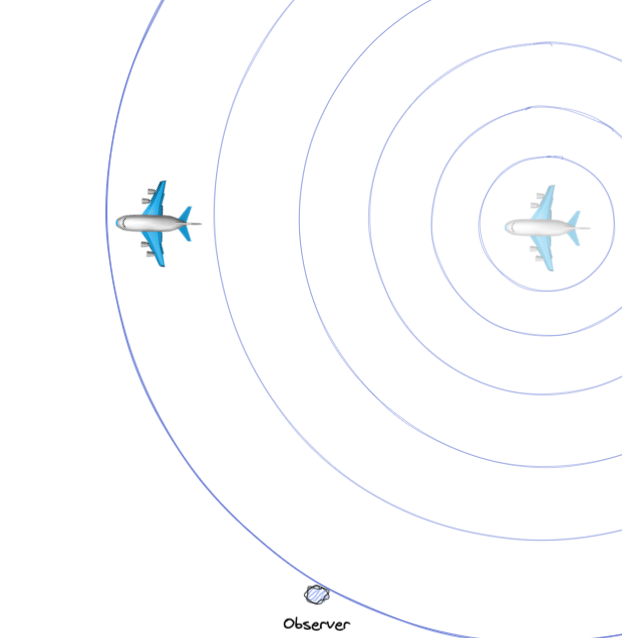
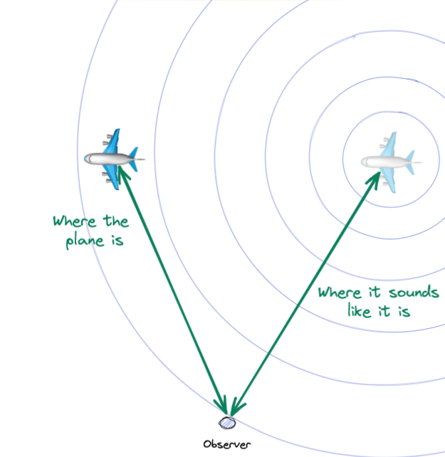
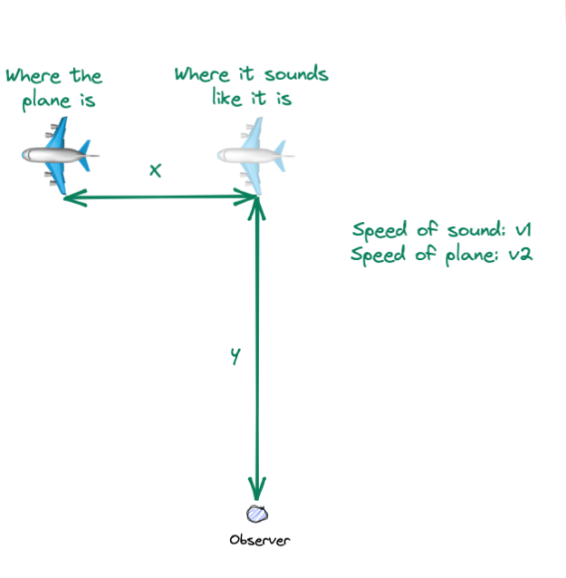
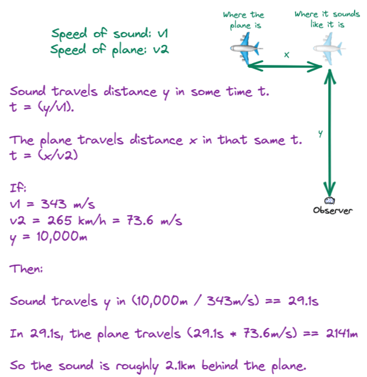

How far behind a plane is its noise?
Jun 12, 2022 · 1420 words · 7 minutes read
If you’re ever near a relatively low flying airplane, you may have noticed that it sounds like it’s in a different spot in the sky than where it actually is. You can hear the loud engines, and your ears tell you it should be in one place, but your eyes tell you it’s clearly well ahead of its noise.
It’s a funny visual trick, and, living near the Boston airport flight path, I was thinking the other day about how it works.
What does it mean to be “behind”?
The first key point is that the concept of the noise being “behind” the plane relies on you, as an observer, trying to locate the plane. These planes are generating noise from their engines constantly, and that noise spreads out from the engines. From the plane’s point of view, there’s no real “behind” — the engines are just constantly making noise1.
Once you’re a little farther away from the plane, it gets a little more interesting. Because noise and light travel at different speeds through air, they can look like they’re out of sync. Let’s say you’re observing a flying plane. At some instant, that plane’s loud engines make some noise, which travels through the air like a ripple on a pond.

A small amount of time later, the sound wave will also have continued on its journey. The plane will also have continued on its journey, and it will be creating new sound waves. For now, let’s just think about the sound that the plane created at that earlier point in time.

The plane is now some distance from where it was when it created that noise — marked by the semi-transparent plane in the diagram. The sound hasn’t reached you yet, but the effect is already in motion.
This will continue as the plane continues to fly.




Finally, the sound wave from the original spot reaches you. By this time, the plane has zoomed ahead, and it’s far from its original position. Because we’re so used to the things we hear being where we see them, it looks to our ears like the plane is in the original position, but it has clearly moved on!

As the plane continues to fly, we as observers hear the ripples that the plane created in the past. Because these sound waves arrive continuously from where the plane used to be, it looks as if the plane’s sound is actually behind it.
Visualizing this with the pictures above, you can see that a few things would affect this effect:
- The speed of the plane
- The speed of the sound (and how loud it is)
- The distance from the observer to the plane
If the plane was moving very slowly, it wouldn’t outpace its sound by much. If the speed of sound was faster, it would get to us faster, leading to less of an effect. If the noise wasn’t loud enough or the plane was too far away, the noise would also dissipate into the air before it got to us (like planes at cruising altitude). If the distance between us and the plane was smaller, there wouldn’t be as much of a dramatic difference between the two speeds.
Luckily for us, planes move fast, they make a lot of noise, sound is relatively slow (compared to light), and planes are usually far enough away.
What a funny trick!
Light versus sound
We’re able to see the plane because of the light reflecting off of it, and we’re able to hear the plane because of the noise from the engine. Light travels really fast, so we can assume that the plane is exactly where it looks like it is. Because the light and the sound travel the distance to us at different speeds, there ends up being this funny gap between the two. Because the plane is moving fast and light gets to us very, very quickly, by the time the sound finally makes it to us, the plane has moved on.
Part of the reason this ends up being such a funny feeling is because our ears are usually so good at visualizing where something is from its sound. If you’re able to, try having someone walk around the room and snap their fingers while you have your eyes closed — even without the visual clues from your eyes, your ears are working overtime to help you “see” where they are in 3D space. You could imagine this being very helpful evolutionarily — when I hear the prey I’m hunting and am able to visualize where it is, it makes it that much easier to see it and get it.2
Even though this phenomenon is the easiest to visualize with sound since the speed gap is wide, it also shows up with light, though it’s a little weirder. If something is moving fast enough and the distance between us and the object is large enough, there can be a gap between where it looks like the object is and where it actually is.
For example, the sun isn’t where the sun looks like it is — it takes about 8 minutes for the light to get to us, so we’re seeing the sun where it used to be, 8 minutes ago. In reality, much like our plane from earlier, the sun has moved on. This one is a little harder to visualize, because it decouples the light from something and that something’s position, but it’s the same exact effect, though without the additional ability to easily verify where something is. This is a neat part of astrophysics, and it’s a little more mind bending — if we’re pretty used to things being where they sound like they are, then we’re very, very used to things being where they look like they are!
Napkin math
We can easily calculate how far the sound is behind the plane with a few approximations.
Like any good physicist, we’ll fudge the numbers with some reasonable approximations. Let’s say that the speed of sound is constant in the air between us and the plane (it’s not). Let’s say that the speed of light is instantaneous (it’s not), so the plane is always where it looks like it is (it slightly isn’t). Let’s assume the speed of the plane is constant (it probably isn’t), and let’s assume it’s flying in a straight line through space (it probably isn’t). We can also look at right angles to help visualize the math easier.

The math is pretty simple: in the time it takes for the sound to reach us, how far does the plane go? We can start with some basic values for everything. Let’s say sound travels at exactly 343 meters per second. Let’s say the plane is at a usual landing speed, 265 kilometers per hour, which is around 73.6 meters per second. Let’s say the observer is 10km from the plane (you can make your own triangles from altitude and GPS coordinates if you want).

With this, it looks like the sound would be around 2.1km behind the plane — definitely enough to notice!
How could you estimate this quickly when you’re out and about? One easy way to do it would be to keep your eyes locked on a single position where the plane is at one instant, then, keeping your eyes on that same spot, count seconds mentally until the sound “looks” like it has also reached that spot. Multiply that by some rough speed of the airplane, maybe 100m/s or so (around 360kph or 224mph, which may be a good guess for a landing/taking off aircraft3), and that will tell you roughly how far behind the sound is. Multiply it by the speed of sound (350m/s or so for napkin math), and that will tell you roughly how far away you are from the plane.
This means that if a plane takes 15 seconds for its sound to catch up, it will “look” like the plane is 1.5km ahead of its noise, and you can also tell you’re around 5km away. Pretty neat!
-
Mach speeds notwithstanding — although flying faster than the speed of sound doesn’t change the effect we’re talking about here, it does get into all sorts of other interesting sound questions. ↩︎
-
As a quick aside, dogs tilt their heads when listening intently, as it allows them to better echolocate the source of the noise. Here’s some dog tax of this in action. ↩︎
-
Details left as an exercise to the aeronautically-minded reader. ↩︎
{kind=link}